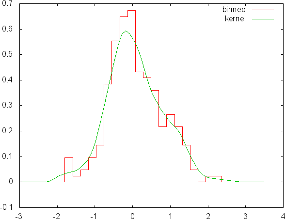
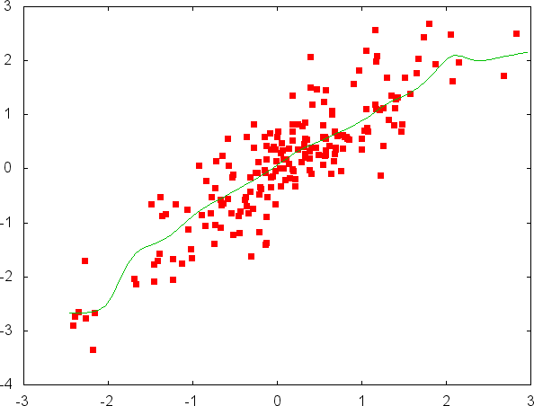

gbutils: command line econometrics
Table of Contents
Getting Started
This is a brief description of gbutils (since version 5.6), a set of
command line utilities for the manipulation and statistical analysis
of data. These utilities read data from standard input in an ASCII
format and print the result in ASCII format to standard output. See
the overview for more details and join gbutils google group for
discussion and news.
Since version 6.0, the gbutils package contains an updated version
of the programs originally distributed in the discontinued
subbotools package. See Documentation for further information.
In many cases, the output of the utilities in the gbutils package is
designed in a format suitable to be sent to other program, like the
graph program in the plotutils package, for plotting. Alternatively,
these utilities can be used inside an interactive gnuplot session, or
inside a gnuplot script, with the help of the special datafile
identifier < (see Gnuplot documentations for details).

Let us see some examples. Figure 1 reports empirical estimates of the density of \(200\) realizations of a exponential power random variable, obtained using both a binned distribution and a kernel estimate. This picture can be obtained in terminal with the following list of commands:
gbrand -c 1 -r 200 gaussian 1 > data.txt gbker < data.txt >kernel.txt gbhisto -n 20 -M 2 <data.txt > histogram.txt gbplot -T 'png enhan crop' -o example1.png plot 'w histeps title "binned",\ "kernel.txt" w l title "kernel" ' < histogram.txt rm data.dat kernel.txt histogram.txt
In the first line, a sample of 200 observations is independently drawn
form a Gaussian distribution with unit variance and saved in the file
data.txt. The second line builds a kernel estimate of the density
and the third an histograms. Results are saved in kernel.txt and
histogram.txt, respectively. The command in the fourth line, which
continues on the fifth, generates the plot and save the result in
example1.png and the last line remove all the intermediary files.

The second example, Figure 2, is a scatter plot of couples of points together with a non-linear kernel regression.
gbrand -c 2 -r 200 gaussian 1 | gbfun 'x1' 'x1+.5*x2' > data.txt gbkreg < data.txt > kernel_reg.txt gbplot -T 'png enhan crop' -o example2.png plot 'w p pt 5,\ "kernel_reg.txt" w l ' < data.txt rm kernel_reg.txt data.txt
The data generated in the first line and saved in data.txt are
independent couples of correlated random variables. A kernel
regression is performed in the second line. The third (and fourth)
lines produce the plot.
What these commands do is to generate random samples, somehow manipulate them, perform some model estimation and finally plot the result. All this in one line of code.
Both pictures are generated using gbplot, which is an interface to
the gnuplot graphic program. To reproduce these pictures the latter
must be installed in your system. Grasping all the details of the
lines above is probably complicated. The baseline message, whoever,
should be clear: even complicated analysis can be split in a sequence
of very simple steps.
The programs in gbutils are completely written in C. Some of them
can make use of external libraries (see below).
These programs have been tested (and repeatedly used for many years) on different Linux distributions and should compile and run, in principle, on any Unix platform. Other operating systems, most notably Windows, have been scarcely tested.
These programs have been originally written for personal use. Even if today they are used by several persons, please consider that I maintain and develop them in my spare time. They are distributed under the GPL license in the hope they could be of help to other people, but without any implied warranty.
Please report bugs to mailto:gbutils@googlegroups.com
Requirements
To be installed from source, the package requires a C compiler and the standard C library. Unix-like environment in which GNU auto-tools can work is required for automatic installation.
Many programs in gbutils do not require ANY external library apart the standard ones. There are however exceptions. Several programs use the GNU Scientific Library (GSL) (version >= 1.6) and other the GNU matheval library (version >=1.0.1).
See the Programs summary table for the list of dependencies of the different utilities.
At install time, if a library is not found, the programs requiring it are omitted from the list of programs to be installed. If the zlib library is found on the system, all the utilities are compiled with the capability of reading gz-compressed input.
For more information about GSL, including installation procedures on various platforms, check here. GNU matheval library is hosted here and zlib home page is here. Notice that, in principle, using programs linked with different libraries can produce slightly different outputs.
Installation instructions
On Linux, the gbutils package can be either installed using a .deb
package or from source. The first method is recommended. You can
download the binaries executable for your system from the Debian or
the Ubuntu repositories. Alternatively, the latest source code
packages are available in the Download section. The installation
from source requires the gcc compiler, the make utility and, in
order to have all utilities with all the features activated, the
development (dev) version of the gsl, matheval and zlib
libraries. You should be able to install all of them using the package
manager of your Linux distribution. Once all the necessary tools and
library are installed, the procedure is rather straightforward.
wget ftp://cafed.sssup.it/packages/gbutils-{version}.tar.gz
tar xvzf gbutils-{version}.tar.gz
cd gbutils-{version}
./configure
make
su
make install
Check the README file in the distributed package for further
details.
In Windows 10 the gbutils package can be installed directly form
the Bash shell using the Windows Subsystem for Linux. To activate it,
open the Settings app, go to "Update & Security -> For Developers" and
activate the “Developer Mode”. Then open the Control Panel, go to
“Programs -> Turn Windows Features On or Off” and enable the “Windows
Subsystem for Linux” option. Confirm with “OK" and reboot the system
to install the new software. Open Microsoft Store and install your
preferred Linux distribution. I suggest Ubuntu or Debian. Now you have
a Linux system inside Windows 10. Launch the just installed
application or start the "Bash" program to enter a console and install
the package with
sudo apt-get update sudo apt-get install gbutils
In older versions of Windows, the gbutils package is installed in
the Cygwin environment. Follow the instructions in the cygwin
installation page.
Documentation
For a brief survey of the package features see the overview. The
gbget utility is the Swiss knife of the package, the main tool to
perform data manipulation. Its special role commands a specific gbget
tutorial.
The utility gbtest provides a number of non-parametric statistical
tests. They are described in the tests summary page.
The gbutils package also includes a set of utilities specifically
aimed to the estimation of symmetric and asymmetric Laplace and power
exponential distributions. You can find a description of these
utilities in power exponential estimation.
A brief summary of options and modes of operation can be obtained from
all the programs using the command line option -h or --help. All
the programs are accompanied by automatically generated manual pages
which can be isnpected with the man Unix utility.
Contributors
Cees Diks, Federico Tamagni, Angelo Secchi and Davide Pirino provided helpful suggestions and coding.